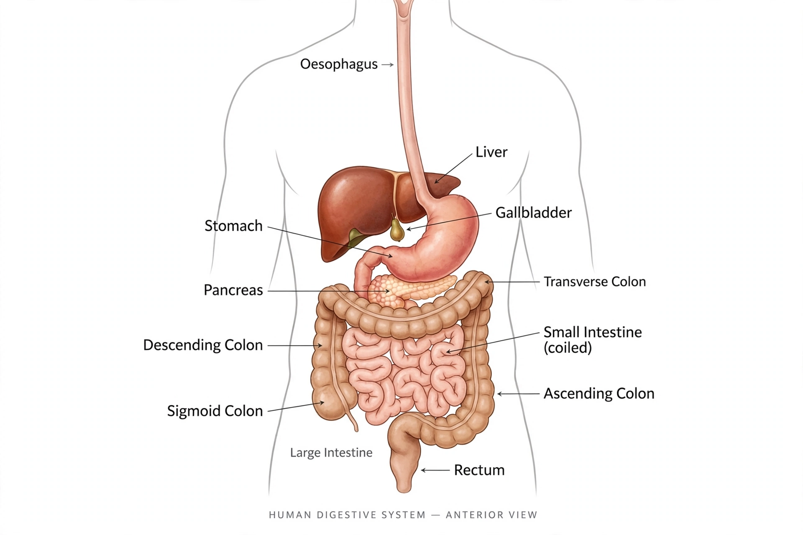

Digestive system

[Image: diagram of the human digestive system showing stomach, liver and intestines]The human digestive system consists of the gastrointestinal tract plus accessory glands, and carries out digestion: breaking food into molecules small enough to absorb, absorbing them into the blood, and eliminating the residue. The tract runs mouth, pharynx, oesophagus, stomach, small intestine and large intestine, assisted by the liver, gallbladder and pancreas.
Digestion is mechanical (chewing, churning, peristalsis) and chemical: enzymes and acid dismantle proteins, fats and carbohydrates. Most absorption happens in the small intestine, whose villi and microvilli give it an enormous surface. The large intestine absorbs water and hosts much of the gut microbiome.
Accessory organs
The liver produces bile (which emulsifies fats), processes absorbed nutrients, detoxifies blood and stores glycogen and vitamins. The pancreas secretes digestive enzymes and the hormones insulin and glucagon. Salivary glands start starch digestion in the mouth.
Disorders
Common disorders include reflux, peptic ulcers (often caused by the bacterium Helicobacter pylori), coeliac disease, inflammatory bowel disease (Crohn's disease and ulcerative colitis), gallstones, and cancers of the colon and pancreas. Gastroenterology is the relevant specialty.